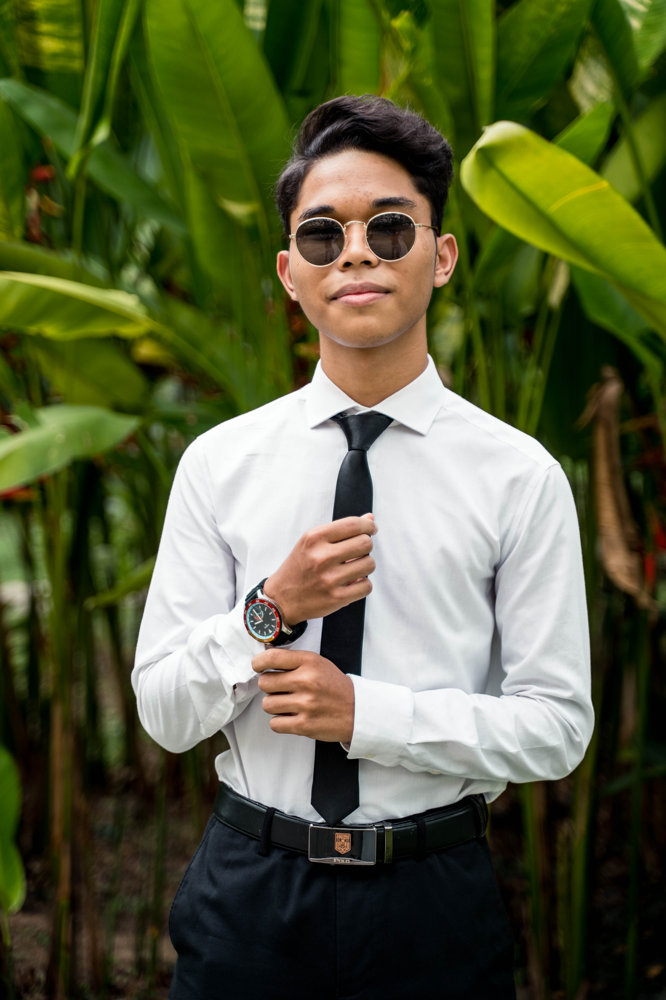
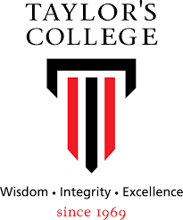
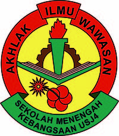

About me
My name is Muzakkir, I'm currently 19 years old. I was born in Selangor, I'm a hands-on and inquisitive person towards technology. I like to see how things work close up such as a smartphone. I prefer to work in a group then individually therefore I'm easy to collaborate with. I'm looking forward to exploring more in the technology world.
contact
phone
+601112115697
Email
Muzakkir502anuar@gmail.com
Adress
Jalan USJ 3D/6 USJ Avenue
Subang Jaya, Selangor


Experiance
Work Experiance
Grab Holdings Inc. 2022
GrabFood driver
During my semester 2 break which is in early July 2022, I register as a part-time GrabFood
driver.
I deliver food from the restaurant to the customer's front door. I do this for two
months and I got good
reviews from the customers. I'm not just delivering food only, I do
deliver some groceries, important files, and ETC.
Education
2021-2023
Taylor's University Lakeside Campus
Diploma In Information
Technology

2018-2021
Sekolah Menengah Kebangsaan USJ 4
Sijil Pelajaran Malaysia (SPM)

Achievment
Participate in Smart School IoT HACKATHON
I participate in the Smart School IoT HACKATHON competition from 2nd to 3rd
NOVEMBER 2019. My team manage to get the most innovative idea and got second place
in the competition. I and my team invent a scanner that can scan groceries item that
attaches to the groceries trolly that will sum up all the items inside the trolly so the
customer will know how much they need to pay and think about their budget before
heading towards the counter.
Participate in Science Computer Quiz
I participate in the Science Computer Quiz from 18 Mac to 22 Mac 2019. I manage to get
second place in the competition.
Volunteer in primary school Sports Day
I volunteer to be a facilitator on Sports Day at KAFA INTEGRASI MASJID AL-FALAH USJ 9
on 16 FEBRUARI 2020. I help the school teacher to managing the primary school student
to make sure everything went well on that they. I was arranged to be the audio technician.
Skills
Soft Skills
Technical Skills
Leadership
Problem solving
Creative thinking
Teamwork
Positivity
Listening
Microsoft Word
Microsoft Excel
Microsoft PowerPoint
Basic video editingk
Basic coding
Language
Malay (100%)
English (75%)
Interest
Travelling
Hearing Music
Teardown smartphone
Play Games
Reference
Henry Heng Hian Wee
Lecturer at Taylor's Collage
Phone
+60193188329
Isaac Lam Yee Ming
Lecturer at Taylor's Collage
Phone
+60126830618